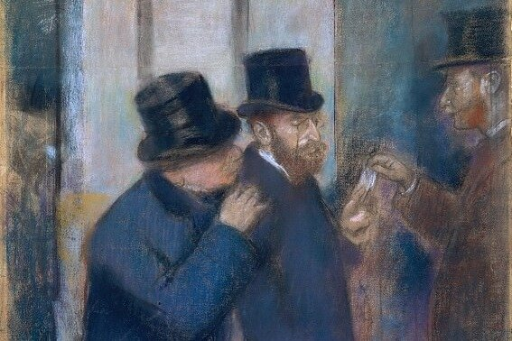

"Двойник" - это небольшая, но мощная повесть Фёдора Михайловича Достоевского, написанная в 1846 году. Она является одним из самых ранних произведений писателя, но уже в ней видна его гениальность в изображении темных и сложных психологических портретов. В "Двойнике" Достоевский погружает нас в мир безысходности, страха и паранойи, исследуя самые мрачные уголки человеческой души.
Повесть рассказывает историю молодого чиновника, Якова Петровича Голядкина, человека, застрявшего в капкане неуверенности в себе и чувства собственной никчемности. Он мечтает о признании и уважении, но его застенчивость и неловкость мешают ему добиться желаемого. Он считает себя недооцененным и презираемым, жизнь его полна неудач, и он постоянно ищет поддержку и сочувствие от окружающих. Но в один из дней его жизнь переворачивается с ног на голову. Он встречает человека, поразительно похожего на него самого - "двойника". Этот двойник - словно отражение его собственных страхов и неуверенности, но в то же время он обладает свободой и наглостью, которой Голядкину так не хватает. Двойник свободно движется в том мире, куда Голядкин боится войти, он чувствует себя более свободным и уверенным в себе, и в то же время он с презирающим удовольствием разрушает все то, что Голядкин старался создать для себя. По мере того, как влияние двойника усиливается, Голядкин всё глубже погружается в мир безумия и отчаяния. Он постепенно теряет контроль над реальностью, не может отличить свои собственные мысли от мыслей своего двойника, и в конце концов полностью теряет свой разум. "Двойник" - это не просто история о двойниках. Это повесть о двойственности человеческой природы, о темной стороне души, которая скрывается в каждом из нас. Достоевский показывает нам, что страхи и неуверенность могут вести к саморазрушению, а попытки подавить свои темные стороны могут привести к еще большим катастрофам
Главный герой: Голядкин - неуверенный в себе, застенчивый и мнительный чиновник, мечтающий о признании и уважении. Он страдает от комплекса неполноценности, считая себя недооцененным и нелюбимым. Он постоянно ищет подтверждения своей ценности в глазах окружающих, но его неловкость и неуверенность лишают его возможности найти то, что он ищет.
Двойственность: Голядкин представляет собой тип человека, в котором противоречат друг другу желание быть признанным и страх перед неудачами. Он мечтает о взаимности, но не решается сделать шаг навстречу. Он хочет быть среди людей, но боится их суждений. В нем живут две противоположные силы: желание принадлежать и страх быть отвергнутым.
Жертва собственных страхов: Голядкин становится жертвой своих собственных страхов. Его неуверенность в себе приводит к тому, что он видит врагов везде, а любая неудача становится для него катастрофой. Он не может отделить реальность от своих собственных фантазий, что и приводит его к безумию.
Темная сторона Голядкина: Двойник представляет собой темную сторону личности Голядкина, от которой он старается отказаться. Он свободен от комплексов и страхов, он нагл и безжалостен, и он с удовольствием разрушает все то, что Голядкин старается создать для себя
Внутренний конфликт: Двойник не просто "дурной" персонаж, он является отражением тех темных и непризнанных частей личности Голядкина, которые он постарался забыть. В нём обнаруживается не только зло, но и определённая свобода и способность действовать в соответствии со своими желаниями, чего Голядкин лишён.
Символ бессознательного: В образе двойника Достоевский показывает нам, что мы не всегда контролируем свои собственные мысли и действия. Бессознательное может влиять на нас сильнее, чем мы думаем, и может привести к непредсказуемым результатам.
Чиновники: Они представляют собой бесчувственную и холодную среду, в которой Голядкин чувствует себя одиноким и отвергнутым. Они не замечают его страданий и не хотят его понимать.
Служанки: Они являются представителями нижних слоев общества, и они смотрят на Голядкина с презрение, что усиливает его чувство беспомощности.
